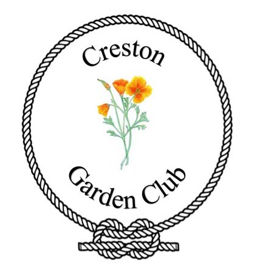
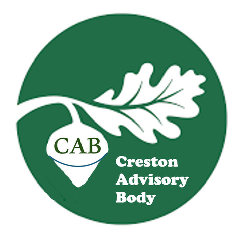
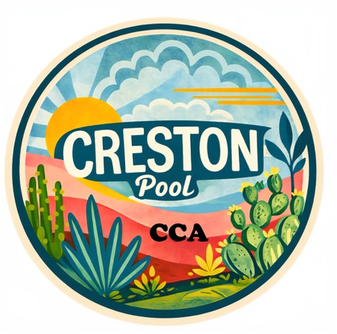
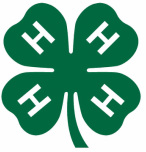
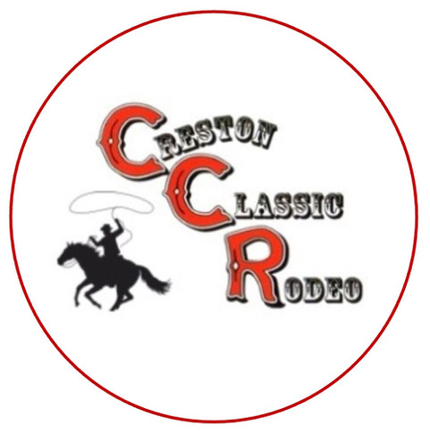
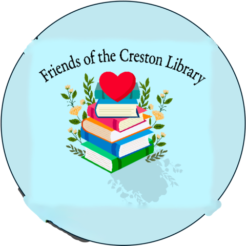
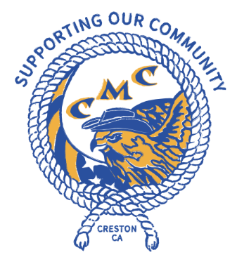

About C.A.T.C.H.
What is C.A.T.C.H.?
C.A.T.C.H. stands for Creston Activities Town Center Helping Hands.
Established in 1992, C.A.T.C.H. is the consortium and parent organization that manages and maintains the Creston Community Center. Rather than being run by a single entity, C.A.T.C.H. was formed by a coalition of local community groups who each hold a vote in the organization's decisions.
Founding and active member organizations include:
 |
Creston Garden Club
An all-volunteer nonprofit promoting gardening. They maintain the beautiful Community Volunteer Garden adjacent to the center, as well as the local library's gardens. |
 |
Creston Advisory Body
The official advisory body to the San Luis Obispo County Board of Supervisors, facilitating communication between the Creston community and county government. |
 |
CCA - Creston Pool Fund
A volunteer organization primarily focused on fundraising for, staffing, and maintaining the Creston community swimming pool, originally built by volunteers in 1960. |
 |
Creston 4H
Part of the UC 4-H Youth Development Program, helping young people develop confidence, leadership, and life skills through hands-on projects ranging from agriculture to community service. |
 |
Creston Classic Rodeo
A 501(c)(3) nonprofit established in 1996 that hosts the beloved annual September rodeo, celebrating the region's pioneering heritage while raising funds for local facilities. |
 |
Friends of Creston Library (via SLO Friends of the Library)
Dedicated to supporting and enhancing the cultural and educational value of the Creston Library branch, ensuring access to resources and programs for all ages. |
 |
Creston Men's Club
Established in 1994, the Men's Club supports community needs, awards student scholarships, and hosts events like their famous Reverse-Drawing dinner. |
|
Creston Women's Club
A volunteer-run 501(c)(3) established in 1939. They provide scholarship funding, organize events like the Bingo Burger Bash, and support local educational causes. |
Our Non-Profit Mission
The primary mission of the C.A.T.C.H. Fund is to oversee, fund, and maintain the Creston Community Center facility. For over 30 years, C.A.T.C.H. has organized local fundraising efforts—partnering with local institutions like the Creston Classic Rodeo—to ensure the building remains upgraded, safe, and accessible to everyone in the community.
Get Involved / Donate
The Creston Community Center relies on the ongoing support of our community. If you are interested in volunteering, joining one of the member organizations, or making a donation to the C.A.T.C.H. Fund to help with building maintenance and improvements, please reach out to us via our Contact Page.
C.A.T.C.H. (Creston Activities Town Center Helping Hands) is a registered non-profit organization. (Tax ID / EIN: 59-3839276)